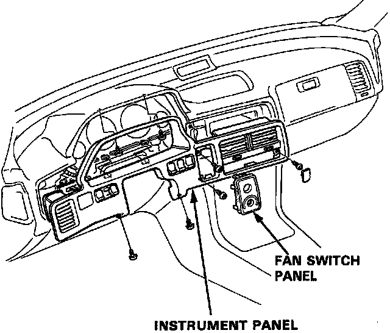
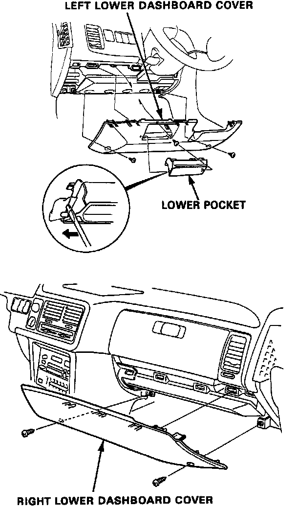
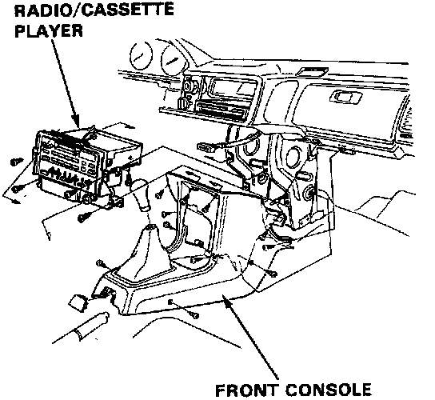
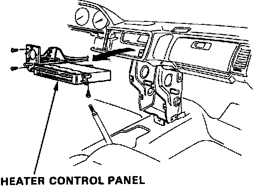

Heater Control Replacement
Replacement
1. Remove the instrument panel (1 knob, 7 screws).

2. Remove the right and left lower dashboard covers.

3. Remove the front console and the radio/cassette player.
NOTE: The radio may have a coded theft protection circuit. Be sure to get the customer's code number before
- Disconnecting the battery.
- Removing the No.14 (15 A) fuse (in the under-dash fuse/relay box).
- Removing the radio. it on.
When the word "CODE" is displayed, enter the customer's 5-digit code to restore radio operation.
4. Disconnect the cables (heater valve cable, air mix control cable).

5. Remove the three self-tapping screws and setting plate, then disconnect the wire harness connectors and cables. Remove the heater control panel.
6. Install in the reverse order of removal, reconnect the cables, making sure they are properly adjusted.